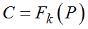
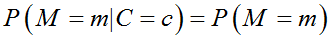
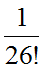

Традиционно в криптографии большой интерес представляла задача доказательства криптостойкости того или иного алгоритма, выражения ее в некоторых количественных единицах и определения ее верхней и нижней границы. Особый интерес представлял вопрос существования гарантированно стойкого шифра, который будет рассмотрен далее.
Рассматривая шифрование, как зависящее от ключа отображение F открытого текста в шифртекст , можно определить задачу криптоаналитика, как вычисление исходного сообщения (открытого текста) по шифртексту. Одним из параметров, определяющих возможность решения данной задачи, является необходимый объем исходных данных. Существуют криптосистемы, в которых любой объем исходных данных недостаточен для того, чтобы взломать шифр, причем, независимо от используемых вычислительных ресурсов. Такие шифры называются безусловно или абсолютно стойкими. Фактически для таких шифров знание шифртекста не дает никакой дополнительной информации для криптоаналитика.
Если апостериорная вероятность того, что некоторое сообщение было зашифровано при известном шифртексте равна априорной вероятности без знания шифртекста, то такой шифр называется абсолютно (безусловно) стойким:
.
Это имеет место, когда вероятность того, что открытый текст принимает конкретное значение, не зависит от вида криптограммы.
«В шифре простой замены со случайным ключом имеется 26! отображений, соответствующих 26! способам, которыми мы можем заменить 26 различных букв. Все эти способы равновозможны, и поэтому каждый имеет априорную вероятность . Если такой шифр применяется к "нормативному английскому языку" и предполагается, что шифровальщик противника не знает ничего об источнике сообщений, кроме того, что он создает английский текст, то априорными вероятностями различных сообщений из N букв являются просто их относительные частоты в нормативном английском тексте.
Если противник перехватил такую криптограмму из N букв, его апостериорные вероятности изменятся. Если N достаточно велико (скажем, 50 букв), имеется обычно единственное сообщение с апостериорной вероятностью, близкой к единице, в то время как все другие сообщения имею суммарную вероятность, близкую к нулю. Таким образом, имеется, по существу, единственное "решение" такой криптограммы. Для меньших N (скажем, N = 15) обычно найдется много сообщений и ключей, вероятности которых сравнимы, и не найдется ни одного сообщения и ключа с вероятностью, близкой к единице. В этом случае "решение" криптограммы неоднозначно» [2].
Для абсолютно стойкого шифра вероятности всех возможных решений равны и не зависят от количества имеющегося шифртекста. Поэтому невозможно отличить верный результат от неверного.
Шифр Вернама (одноразовый блокнот). Назван в честь телеграфиста Гильберта Вернама, являющегося его изобретателем, придуман в 1917 году. Для получения шифртекста открытый текст складывается по модулю 2 (исключающее или) с ключом шифрования. При этом ключ должен обладать следующими свойствами:
1) быть истинно случайным (например, генерироваться с помощью аппаратных датчиков);
2) иметь размер, равный размеру открытого текста;
3) применяться только один раз и храниться в секрете. Если это требование будет нарушено, то криптограмму можно взломать с использованием разновидности частотного анализа.
При использовании на практике очень длинная ключевая последовательность записывается на некотором носителе (одноразовом блокноте), который имеется на приемной и передающей стороне, после использования строки и страницы данного блокнота уничтожаются. Изначально предназначенный для преобразования текстовых сообщений шифр легко расширяется для кодирования произвольных бинарных данных.
В работе Клода Шеннона доказывается абсолютная стойкость шифра Вернама, что обусловило его применение до настоящего времени при передаче особо важных сообщений государственными и военными структурами. Широкого распространения этот шифр не получил, так как его использование связано с трудоемкой задачей распределения ключей очень большого объема и обеспечения хранения их в секрете.
Важность шифра Вернама состоит в том, что при правильном применении это единственный шифр с абсолютной стойкостью, доказанной теоретически. Это связано с тем, что, не зная ключа, невозможно по имеющемуся шифртексту угадать/вычислить открытый текст. Любой открытый текст соответствующей длины будет равновероятным и у криптоаналитика нет возможности отличить один текст от другого. Расстояние единственности для шифра Вернама равно бесконечности.
Теорема об абсолютной стойкости. Алгоритм шифрования является абсолютно стойким если размерность пространства ключей K больше или равна размерности пространства сообщений [22].
Для других алгоритмов шифрования, при наличии определенного объема шифртекста, имеется возможность выполнить криптоанализ и найти соответствующий ему открытый текст. Минимальный объем шифртекста, для которого это возможно, называют расстоянием единственности, а шифры такого типа называют «условно стойкими». Так, например, для алгоритма DES и текстового английского сообщения расстояние единственности равно 66 бит или 8.2 символа ASCII. Расстояние единственности зависит от вида зашифрованных данных, его можно увеличить, например, с помощью предварительного сжатия сообщений перед шифрованием. Если избыточность стремится к нулю, даже тривиальный шифр будет недоступен для взлома с использованием только шифртекста. Важно понимать, что расстояние единственности это необходимое, но недостаточное условие взлома криптосистемы. Так, для множества криптоатак высокая вычислительная сложность не дает возможности их использования на практике даже при достаточном объеме исходных данных. Сложность взлома условно-стойких шифров основана на сложности решения криптоаналитической задачи. Для условно-стойкого шифра такие задачи должны быть вычислительно сложными или вычислительно неосуществимыми.